정보처리산업기사 (2013-03-10 기출문제)
1과목: 데이터 베이스
1. 데이터베이스 물리적 설계의 옵션 선택시 고려사항으로 거리가 먼 것은?
- 트랜잭션 처리도
- 저장 공간의 효율화
- 트랜잭션 모델링
- 응답 시간
(정답률: 68%)

2. 병행 제어를 하지 않을 때의 문제점 중 하나의 트랜잭션 수행이 실패한 후 회복되기 전에 다른 트랜잭션이 실패한 갱신 결과를 참조하는 현상은?
- Lost Update
- Inconsistency
- Uncommitted Dependency
- Cascading Rollback
(정답률: 62%)
3. 다음 트리를 Post-order로 운행할 때 노드 C는 몇 번째로 검사되는가?
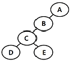
- 2번째
- 3번째
- 4번째
- 5번째
(정답률: 81%)
4. 정규화의 의미로 옳지 않은 것은?
- 함수적 종속성 등의 종속성 이론을 이용하여 잘못 설계된 관계형 스키마를 더 작은 애트리뷰트의 세트로 쪼개어 바람직한 스키마로 만들어가는 과정이다.
- 좋은 데이터베이스 스키마를 생성해 내고 불필요한 데이터의 중복을 방지하며 정보의 검색을 용이하게 할 수 있도록 허용해 준다.
- 정규형에는 제 1정규형, 제 2정규형, 제 3정규형, BCNF형, 제 4정규형 등이 있다.
- 어떠한 릴레이션 구조가 바람직한 것인지, 바람직하지 못한 릴레이션을 어떻게 합쳐야 하는지에 관한 구체적인 판단기준을 제공한다.
(정답률: 52%)
5. 널 값(null value)에 대한 설명으로 옳지 않은 것은?
- 공백(space)과는 다른 의미이다.
- 아직 알려지지 않은 모르는 값이다.
- 영(zero)과 같은 값이다.
- 정보의 부재를 나타낼 때 사용하는 특수한 데이터 값이다.
(정답률: 87%)
6. 데이터베이스의 특성으로 옳지 않은 것은?
- Concurrent Sharing
- Address Reference
- Continuous Evolution
- Time Accessibility
(정답률: 69%)
7. 뷰(VIEW)에 대한 설명으로 옳지 않은 것은?
- 논리적 데이터 독립성을 제공한다.
- 뷰의 정의 변경시 ALTER VIEW 문을 사용한다.
- 독자적인 인덱스를 가질 수 없다.
- 데이터 접근 제어로 보안을 제공한다.
(정답률: 60%)
8. 해싱에서 동일한 홈 주소로 인하여 충돌이 일어난 레코드들의 집합을 의미하는 것은?
- Synonym
- Collision
- Bucket
- Overflow
(정답률: 73%)
9. 다음 영문의 ( )에 가장 적합한 것은?
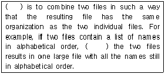
- Sorting
- Stacking
- Merging
- Queueing
(정답률: 60%)
10. 시스템 카탈로그에 대한 설명으로 옳지 않은 것은?
- 기본 테이블, 뷰, 인덱스, 패키지, 접근 권한 등의 정보를 저장한다.
- 시스템 테이블로 구성되어 있어 일반 사용자는 내용을 검색할 수 없다.
- 시스템 자신이 필요로 하는 스키마 및 여러 가지 객체에 대한 정보를 포함하고 있는 시스템 데이터베이스이다.
- 자료 사전(Data Dictionary)이라고도 한다.
(정답률: 83%)
11. 자료구조를 선형구조 및 비선형구조로 구분할 경우 다음 중 성격이 다른 하나는 무엇인가?
- TREE
- DEQUE
- QUEUE
- STACK
(정답률: 84%)
12. SQL을 정의, 조작, 제어문으로 구분할 경우, 다음 중 나머지 셋과 성격이 다른 것은?
- DELETE
- UPDATE
- CREATE
- SELECT
(정답률: 76%)
13. 데이터베이스의 정의로 옳지 않은 것은?
- 조직의 존재 목적이나 유용성 면에서 존재 가치가 확실한 필수적 데이터이다.
- 정보 소유 및 응용에 있어 지역적으로 유지되어야 한다.
- 컴퓨터가 접근할 수 있는 저장 매체에 저장된 자료이다.
- 동일 데이터의 중복성을 최소화해야 한다.
(정답률: 81%)
14. A, B, C, D의 순서로 정해진 입력 자료를 스택에 입력하였다가 출력한 결과가 될 수 없는 것은?
- B, A, C, D
- B, C, D, A
- A, B, C, D
- C, D, A, B
(정답률: 67%)
15. 정규화 과정 중 이행함수 종속제거가 이루어지는 단계는?
- 비정규 릴레이션 → 1NF
- 1NF → 2NF
- 2NF → 3NF
- 3NF → BCNF
(정답률: 80%)
16. In computing, this is the process of rearranging an initially unordered sequence of records until they ordered. What is this?
- debugging
- loading
- sorting
- compiling
(정답률: 65%)
17. 다음 설명에 해당하는 정렬 기법은?
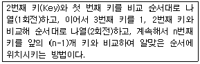
- Quick Sort
- Selection Sort
- Insertion Sort
- Bubble Sort
(정답률: 57%)
18. 릴레이션의 특징이 아닌 것은?
- 하나의 릴레이션에서 튜플의 순서는 있다.
- 모든 튜플은 서로 다른 값을 갖는다.
- 각 속성은 릴레이션 내에서 유일한 이름을 갖는다.
- 모든 속성 값은 원자 값이다.
(정답률: 79%)
19. 한 릴레이션의 기본 키를 구성하는 어떠한 속성 값도 널(Null) 값이나 중복 값을 가질 수 없음을 의미하는 관계 데이터 모델의 제약조건은 무엇인가?
- 참조 무결성
- 릴레이션 무결성
- 외래키 무결성
- 개체 무결성
(정답률: 76%)
20. 그래프로 표현하기에 적절치 않은 것은?
- 행렬
- 유기화학 구조식
- 통신 연결망
- 철도 교통망
(정답률: 65%)
2과목: 전자 계산기 구조
21. 중앙처리장치와 입출력장치의 처리 속도 불균형을 보완하며, 중앙처리장치를 입출력 조작에서 해방시켜서 중앙처리장치 본래의 일을 보다 많이 할 수 있도록 하기 위하여 필요한 것은?
- 완충 제어장치
- 채널
- 제어장치
- 연산 논리장치
(정답률: 70%)
22. 여러 대의 고속 입출력 장치가 동시에 하나의 채널을 공유하고 데이터를 전송할 수 있는 채널 방식은?
- 바이트 다중 방식
- 버스트 방식
- 입출력 선택 채널 방식
- 입출력 블록 다중 채널 방식
(정답률: 66%)
23. 사용되는 문자의 빈도수에 따라 코드의 길이가 달라지는 코드는?
- 7421코드
- 그레이(Gray) 코드
- 허프만(Huffman) 코드
- 비퀴너리(Biquinary) 코드
(정답률: 62%)
24. 인터럽트(interrupt) 발생 요인과 관계없는 것은?
- 정전시
- 컴퓨터 조작원의 요구에 따라 중단하고자 할 때
- 처리 결과가 만족하지 않을 때 자동 발생
- 입출력 장치의 동작에 중앙처리장치의 기능이 요청될 때
(정답률: 64%)
25. 다음과 같은 회로도의 조건 제어문은?
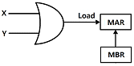
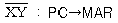
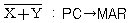
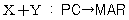
(정답률: 70%)
26. 2개의 2진수 변수로 수행할 수 있는 논리 연산은 몇 가지 있을 수 있는가?
- 8
- 16
- 32
- 64
(정답률: 62%)
27. 마이크로프로세서의 명령집합에서 소프트웨어로 하드웨어를 정지시키는 것은?
- push
- pop
- halt
- interrupt
(정답률: 46%)
28. 제어 메모리에서 읽어온 마이크로명령어가 몇 개의 필드로 나누어져 있고, 각 필드는 디코더(decoder)의 입력으로 사용되었다. 그리고 디코더의 출력이 제어신호로 사용되었다면 이 마이크로명령어는 어떤 형식의 마이크로 명령어인가?
- 수직마이크로명령어형식
- 수평마이크로명령어형식
- 마이크로프로그램형식
- 매크로프로그램형식
(정답률: 46%)
29. 가상기억장치에 관한 설명 중 옳은 것은?
- 많은 데이터를 주기억 장치에서 한 번에 가져오는 것을 말한다.
- 사용자가 보조 메모리의 총용량에 해당하는 기억장소를 컴퓨터가 갖고 있는 것처럼 가상하고, 프로그램을 작성할 수 있는 것을 말한다.
- 데이터를 미리 주기억 장치에 넣는 것을 말한다.
- 자주 참조되는 프로그램과 데이터를 모은 메모리다.
(정답률: 76%)
30. 2개의 2진수 10110110 과 11010111 를 AND 연산한 결과의 값은?
- 10010110
- 01101001
- 11110111
- 10001101
(정답률: 76%)
31. 다음 설명 중 틀린 것은?
- 중앙처리장치에서 연산한 결과 등을 일시적으로 저장해두는 레지스터를 누산기라 한다.
- 입출력 장치는 주변장치에 해당된다.
- 레지스터에서 기억장치로 정보를 옮기는 것을 로드(load)라 한다.
- 기억장치내의 데이터를 다른 기억장치로 옮기는 것을 전송이라 한다.
(정답률: 61%)
32. 다음 중 AND 연산을 이용하여 어느 비트(문자)를 지울 것인가를 결정하는 자료가 되는 것은?
- CARRY(캐리)
- 플립플롭
- 패리티(parity) 비트
- 마스크(mask) 비트
(정답률: 66%)
33. 다음 중 인터럽트와 관계가 없는 것은?
- 데이지 체인(daisy chain)방법
- 폴링(polling)
- 스택(stack)
- DMA
(정답률: 58%)
34. 자기디스크 장치의 3 요소에 들지 않는 것은?
- 디스크(disk)
- 액세스 암(access arm)
- 헤드(head)
- 트랙(track)
(정답률: 41%)
35. 마이크로 오퍼레이션 수행에 필요한 시간은?
- search time
- seek time
- access time
- CPU clock time
(정답률: 54%)
36. 명령 코드의 비트는 필드라고 불리는 몇 개의 그룹으로 나누어진다. 그 중 모드 필드(mode field)에 대한 설명으로 옳은 것은?
- 오퍼랜드나 유효번지가 결정되는 방법을 나타낸다.
- 메모리나 레지스터를 지정하는 방법을 나타낸다.
- 수행하여야 할 동작을 나타낸다.
- 명령을 수행하도록 제어 함수를 제공하는 방법을 나타낸다.
(정답률: 48%)
37. B000H 번지에서 DAFFH 번지까지의 메모리 영역은 모두 몇 페이지(page)인가?
- 23
- 33
- 43
- 53
(정답률: 52%)
38. 명령어 실행 과정에서 명령어가 지정한 번지를 수정하기 위한 레지스터는?
- 명령 레지스터
- 프로그램 레지스터
- 베이스 레지스터
- 인덱스 레지스터
(정답률: 59%)
39. 어떤 자기 디스크 장치에 있는 양쪽 표면이 모두 사용되는 8개의 디스크가 있는데, 각 표면에는 16개 트랙과 8개의 섹터가 있다. 트랙내의 각 섹터에 하나의 레코드가 있다면 디스크 내의 레코드에 대한 주소 지정에는 몇 비트가 필요한가?
- 10
- 11
- 12
- 13
(정답률: 39%)
40. 카운터를 설계하는데 가장 많이 사용되는 플립플롭은?
- M/S 플립플롭
- T 플립플롭
- RS 플립플롭
- D 플립플롭
(정답률: 53%)
3과목: 시스템분석설계
41. 코드의 기능으로 거리가 먼 것은?
- 표준화 기능
- 분류 기능
- 간소화 기능
- 균형 기능
(정답률: 66%)
42. 마스터 파일(Master File)의 변경하고자 하는 내용을 검사하거나 갱신할 때 사용되는 정보로서, 일시적인 성격을 지닌 파일은?
- Transaction File
- History File
- Summary File
- Trailer File
(정답률: 72%)
43. 시스템의 기본 요소 중 처리된 결과가 정확하지 않으면 결과의 일부나 오차를 다음 단계에 다시 입력하여 한 번 더 처리하는 것을 의미하는 것은?
- 제어 기능
- 피드백 기능
- 처리 기능
- 출력 기능
(정답률: 78%)
44. 코드 설계시 주의 사항으로 거리가 먼 것은?
- 컴퓨터 처리에 적합하도록 한다.
- 공통성이 있도록 한다.
- 비체계성이 있어야 한다.
- 확장성이 있어야 한다.
(정답률: 74%)
45. 럼바우의 객체지향 분석기법에서 시간의 흐름에 따라 변하는 객체들 사이의 제어흐름, 상호작용, 연산순서 등의 동적인 행위를 상태 다이어그램으로 나타내는 것은?
- 객체 모델링
- 기능 모델링
- 동적 모델링
- 정적 모델링
(정답률: 67%)
46. 시스템의 특성 중 어떤 조건이나 상황의 변화에 대응하여 스스로 대처할 수 있음을 의미하는 것은?
- 목적성
- 제어성
- 종합성
- 자동성
(정답률: 64%)
47. 사용자 인터페이스 설계를 위한 인간공학적 원리에 포함되지 않는 것은?
- 지름길을 제공한다.
- 작업의 진행 상황을 알려준다.
- 일관된 인터페이스를 가진다.
- 사용자의 비전문성을 인정하지 않는다.
(정답률: 76%)
48. 시스템의 문서화 목적으로 거리가 먼 것은?
- 시스템 개발 후 유지 보수가 용이하다.
- 시스템 개발 단계의 요식행위이다.
- 시스템 개발팀에서 운용팀으로 인계, 인수를 쉽게 할 수 있다.
- 시스템 개발 중 추가 변경에 따른 혼란을 방지할 수 있다.
(정답률: 78%)
49. 출력 설계의 순서가 옳은 것은?
- 출력의 내용→출력의 매체화→출력의 분배→출력의 이용
- 출력의 매체화→출력의 분배→출력의 이용→출력의 내용
- 출력의 분배→출력의 이용→출력의 내용→출력의 매체화
- 출력의 이용→출력의 내용→출력의 매체화→출력의 분배
(정답률: 68%)
50. 프로세스의 표준 패턴 중 입력 파일의 데이터를 분배조건에 따라 몇 가지 유형으로 분할하여 출력하는 처리를 무엇이라 하는가?
- Update
- Merge
- Matching
- Distribution
(정답률: 68%)
51. 프로세스 설계시 유의사항으로 거리가 먼 것은?
- 시스템의 상태 및 구성 요소, 기능 등을 종합적으로 표시한다.
- 정보의 흐름이나 처리 과정을 특정 부서 직원들만 이해할 수 있도록 설계한다.
- 프로세스 전개의 사상을 통일해야 하며, 하드웨어의 기기 구성, 처리 성능을 고려한다.
- 오류에 대비한 검사 시스템을 고려한다.
(정답률: 78%)
52. 자료 흐름도의 구성 요소 중 대상 시스템의 외부에 존재하는 사람이나 조직체를 나타낸 것은?
- Process
- Data Flow
- Data Store
- Terminator
(정답률: 65%)
53. 자료 입력 방식 중 발생한 데이터를 전표 상에 기록하고 일정한 시간 단위로 일괄 수집하여 입력 매체에 수록하는 입력 방식은?
- 회귀 데이터 시스템
- 집중 매체화 시스템
- 분산 매체화 시스템
- 직접 입력 시스템
(정답률: 63%)
54. 표의 숫자 코드에 대한 설명으로 옳지 않은 것은?
- 코드에 물리적 수치를 부여하여 기억이 용이하다.
- 코드의 추가 및 삭제가 용이하다.
- 같은 코드를 반복 사용하므로 오류가 적다.
- 항목의 자리수가 짧아 기계 처리가 용이하다.
(정답률: 53%)
55. 다음 중 파일 설계 과정의 가장 마지막 단계에 행해지는 것은?
- 파일 항목의 검토
- 편성법 검토
- 파일 매체의 검토
- 파일의 특성 조사
(정답률: 67%)
56. 컴퓨터 입력 단계에서의 오류 검사 방법 중 차변과 대변의 합일치를 검사하는 방법은?
- Balance check
- Limit check
- Sequence check
- Matching check
(정답률: 63%)
57. 해싱 함수에 의한 주소 계산 기법에서 서로 다른 키값에 의해 동일한 주소 공간을 점유하는 현상을 무엇이라고 하는가?
- Synonym
- Changing
- Collision
- Bucket
(정답률: 55%)
58. 시스템 평가(System test)의 종류 중 다음 항목과 관계되는 것은?
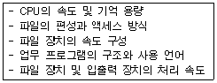
- 기능 평가
- 가격 평가
- 신뢰성 평가
- 성능 평가
(정답률: 66%)
59. 소프트웨어 위기의 발생 요인으로 거리가 먼 것은?
- 급속히 발전하는 소프트웨어에 비해 하드웨어 생산 활동이 보조를 맞추지 못함
- 소프트웨어 개발 인력 부족과 그에 따른 인건비가 상승함
- 다양한 소프트웨어의 요구에 따라 수요는 늘어나지만 공급이 이를 못 따라감
- 소프트웨어 개발 시간이 지연되고 개발 비용의 초과로 인한 문제가 발생함
(정답률: 65%)
60. 모듈 응집도가 높은 것에서 낮은 것의 순서로 옳게 나열된 것은?
- 절차적 응집성→통신적 응집성→순차적 응집성→기능적 응집성
- 통신적 응집성→절차적 응집성→순차적 응집성→기능적 응집성
- 절차적 응집성→통신적 응집성→기능적 응집성→순차적 응집성
- 기능적 응집성→순차적 응집성→통신적 응집성→절차적 응집성
(정답률: 43%)
4과목: 운영체제
61. 파일 보호 기법 중 각 파일에 판독 암호와 기록 암호를 부여하여 제한된 사용자에게만 접근을 허용하는 기법은?
- 파일의 명명(Naming)
- 비밀번호(Password)
- 접근제어(Access control)
- 암호화(Cryptography)
(정답률: 57%)
62. 운영체제의 설계 목표가 아닌 것은?
- 빠른 응답시간
- 경과 시간 단축
- 처리량 감소
- 폭 넓은 이식성
(정답률: 71%)
63. 다중 프로그래밍 운영체제에서 한 순간에 여러 개의 프로세스에 의하여 공유되는 데이터 및 자원에 대하여, 한 순간에는 반드시 하나의 프로세스에 의해서만 자원 또는 데이터가 사용되도록 하고, 이러한 자원이 프로세스에 의하여 반납된 후, 비로소 다른 프로세스에서 자원을 이용하거나 데이터를 접근할 수 있도록 지정된 영역을 의미하는 것은?
- monitor
- semaphore
- critical section
- working set
(정답률: 52%)
64. 다음과 같은 프로세스들이 차례로 준비상태 큐에 들어올 경우 SJF 기법을 사용한다면 평균대기 시간은?
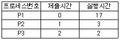
- 10
- 11
- 12
- 13
(정답률: 60%)
65. 13K의 작업을 다음 그림의 14K 공백의 작업공간에 할당했을 경우 사용된 기억장치 배치전략 기법은?
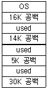
- Last fit
- First fit
- Worst fit
- Best fit
(정답률: 77%)
66. 초기 헤드의 위치가 100번 트랙이고 디스크 대기 큐에 다음과 같은 순서의 액세스 요청이 대기 중이다. SSTF 스케줄링 기법을 사용할 경우 두 번째로 처리하는 트랙은? (단, 가장 안쪽 트랙 : 0, 가장 바깥 쪽 트랙 : 150)
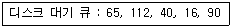
- 40
- 65
- 90
- 112
(정답률: 52%)
67. 디스크 탐색 시간 최적화 전략 중 C-SCAN 스케줄링 전략에 대한 설명으로 가장 적합한 것은?
- 현재 헤드의 위치에서 가장 가까운 I/O 요청을 서비스 한다.
- 헤드가 디스크 표면을 양방향(안쪽/바깥쪽)으로 이동하면서 이동하는 동선의 I/O 요청을 서비스한다. 이때, 헤드는 이동하는 동선의 앞쪽에 I/O 요청이 없을 경우에만 후퇴가 가능하다.
- 헤드는 트랙의 안쪽으로, 한 방향으로만 움직이며 안쪽에 더 이상 I/O 요청이 없으면 다시 바깥쪽에서 안쪽으로 이동하면서 I/O 요청을 서비스한다.
- 먼저 도착한 I/O 요청을 먼저 서비스한다.
(정답률: 55%)
68. 다음은 무엇에 대한 정의인가?
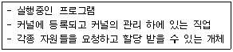
- Locality
- Page
- PCB
- Process
(정답률: 76%)
69. 페이지 크기에 대한 설명으로 옳지 않은 것은?
- 페이지 크기가 작을수록 페이지 테이블 크기가 커진다.
- 페이지 크기가 작을수록 입출력 전송이 효율적이다.
- 페이지 크기가 작을수록 내부의 단편화로 인한 낭비 공간이 줄어든다.
- 페이지 크기가 작을수록 좀 더 효율적인 워킹 셋을 유지할 수 있다.
(정답률: 43%)
70. 하이퍼 큐브 구조에서 각 CPU가 4개의 연결점을 가질 경우 CPU의 총 개수는?
- 4
- 16
- 32
- 68
(정답률: 70%)
71. UNIX에서 파일 시스템을 생성하는 명령은?
- mv
- open
- mkdir
- mkfs
(정답률: 59%)
72. 은행원 알고리즘에 대한 설명으로 옳지 않은 것은?
- "Dijkstra"가 제안한 방법이다.
- 교착상태 해결 방법 중 예방(Prevention) 기법이다.
- 자원의 양과 사용자(프로세스) 수가 일정해야 한다.
- “안전 상태”와 “불안전 상태”라는 두 가지 상태가 존재한다.
(정답률: 63%)
73. HRN 스케줄링 기법 사용시 우선순위가 가장 높은 작업 번호는?
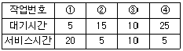
- ①
- ②
- ③
- ④
(정답률: 67%)
74. 현재 헤드의 위치는 트랙 50 이다. 다음과 같이 트랙이 요청되어 큐에 순서적으로 도착하였다. 모든 트랙을 서비스하기 위하여 디스크 스케줄링 기법 중 FCFS 스케줄링 기법이 사용되었을 경우, 총 이동거리는? (단, 가장 안쪽 트랙은 0 이다.)
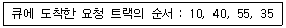
- 50
- 60
- 1⑤
- 140
(정답률: 61%)
75. UNIX에서 커널에 대한 설명으로 옳지 않은 것은?
- 컴퓨터가 부팅될 때 주기억장치에 적재된 후 상주하면서 실행된다.
- 프로그램과 하드웨어 간의 인터페이스 역할을 담당한다.
- 기억장치 관리, 파일 관리, 프로세스 관리, 명령어해석기 역할을 수행한다.
- UNIX의 가장 핵심적인 부분이다.
(정답률: 58%)
76. 파일 디스크립터에 대한 설명으로 옳지 않은 것은?
- 파일마다 독립적으로 존재하며, 시스템에 따라 다른 구조를 가질 수 있다.
- 파일 제어 블록(FCB)이라고도 한다.
- 사용자가 관리하므로 사용자가 직접 참조할 수 있다.
- 파일 관리를 위해 시스템이 필요로 하는 정보를 가지고 있다.
(정답률: 65%)
77. 다중 처리기 운영체제 구조 중 주종(Master/Slave) 처리기에 대한 설명으로 옳지 않은 것은?
- 주프로세서는 입출력과 연산을 담당한다.
- 운영체제의 수행은 주프로세서가 담당한다.
- 주프로세서가 입출력을 수행하므로 비대칭 구조를 갖는다.
- 주프로세서가 고장 날 경우에도 전체 시스템이 다운되지 않는다.
(정답률: 70%)
78. 3 개의 페이지 프레임을 갖는 시스템에서 페이지 참조 순서가 1, 2, 1, 0, 4, 1, 0 일 경우 FIFO 알고리즘에 의한 최종 페이지 대치 결과는?
- 1, 4, 2
- 4, 1, 3
- 1, 2, 0
- 4, 1, 0
(정답률: 68%)
79. 운영체제에 관한 설명으로 옳지 않은 것은?
- 운영체제는 고급 언어로 작성된 프로그램을 컴파일하여 기계어로 만들어준다.
- 운영체제는 CPU, 기억장치 등의 자원을 관리한다.
- 운영체제는 파일, 입출력 장치 등의 자원을 관리한다.
- 운영체제는 사용자가 쉽게 하드웨어에 접근할 수 있도록 한다.
(정답률: 68%)
80. 구역성(locality)에 대한 설명으로 옳지 않은 것은?
- 시간구역성의 예로는 순환, 부프로그램, 스택 등이 있다.
- 구역성에는 시간구역성과 공간구역성이 있다.
- 어떤 프로세스를 효과적으로 실행하기 위해 주기억장치에 유지되어야 하는 페이지들의 집합을 의미한다.
- 프로세서들은 기억장치내의 정보를 균일하게 액세스 하는 것이 아니라, 어느 한순간에 특정 부분을 집중적으로 참조하는 경향이 있다.
(정답률: 50%)
5과목: 정보통신개론
81. 데이터링크 계층의 주요 기능이 아닌 것은?
- 데이터링크 접속 설정
- 흐름제어
- 에러제어
- 경로선택
(정답률: 51%)
82. 변조속도의 단위로 옳은 것은?
- Baud
- CPS
- WPS
- PPS
(정답률: 72%)
83. 데이터 교환 방식의 유형에 포함되지 않는 것은?
- 주파수교환
- 패킷교환
- 메시지교환
- 회선교환
(정답률: 48%)
84. 샤논(Shannon)의 정리에 따라 백색 가우스 잡음이 발생되는 통신로의 용량 C가 바르게 표시된 것은?
- C=Wlog2(1+S/N)
- C=Wlog10(1+S/N)
- C=Wlog2(1+N/S)
- C=Wlog10(1+N/S)
(정답률: 54%)
85. 송신측에서 1개의 프레임을 전송한 후, 수신측에서 오류의 발생을 점검하여 ACK 또는 NAK를 보내올 때 까지 대기하는 ARQ 방식은?
- 선택적 ARQ
- 적응적 ARQ
- 연속적 ARQ
- 정지-대기 ARQ
(정답률: 72%)
86. 통신 프로토콜(protocol)의 기본 요소에 해당하지 않는 것은?
- Format
- Syntax
- Semantics
- Timing
(정답률: 63%)
87. HDLC 프레임 구조 중 주소영역에서 모든 스테이션에게 프레임을 전송하기 위한 값으로 맞는 것은?
- 00000000
- 00001111
- 11110000
- 11111111
(정답률: 65%)
88. 미국 군사용 방공 시스템으로 사용된 최초의 데이터통신 시스템은?
- ARPA
- CTSS
- SABRE
- SAGE
(정답률: 54%)
89. DSU(Digital Service Unit)의 기능으로 맞는 것은?
- 아날로그 신호를 디지털 데이터로 변환시킨다.
- 디지털 데이터를 아날로그 신호로 변환시킨다.
- 아날로그 신호를 아날로그 데이터로 변환시킨다.
- 디지털 데이터를 디지털 신호로 변환시킨다.
(정답률: 63%)
90. LAN의 매체 접근 제어 방식 중 Token Passing 방식에 사용되는 Token의 기능으로 맞는 것은?
- 채널의 사용권
- 노드의 수
- 전송매체
- 패킷 전송량
(정답률: 44%)
91. 패킷 교환 방식(packet switching)의 특징이 아닌 것은?
- 메시지 교환 방식과 같이 축적 교환 방식의 일종이다.
- 트래픽 용량이 적은 경우에 유리하다.
- 전송할 수 있는 패킷의 길이가 제한되어 있다.
- 데이터 그램과 가상회선방식이 있다.
(정답률: 41%)
92. 통신제어장치의 기능에 해당하지 않는 것은?
- 문자의 조립 및 분해
- 전송 제어
- 오류 검출
- 통신 신호의 변환
(정답률: 28%)
93. 데이터 전송의 흐름이 양방향으로 전송이 가능하지만, 동시에 양방향으로 전송할 수 없으므로 정보의 흐름을 전환하여 반드시 한 방향으로만 전송하는 전송방식은?
- 전이중(Full Duplex) 방식
- 반이중(Half Duplex) 방식
- 단방향(Simplex) 방식
- 비동기(Asynchronous) 전송 방식
(정답률: 72%)
94. 네트워크 계층 이상의 망 간 접속 기능을 수행하는 장치로 보통 두 개의 서로 다른 망들을 상호 연결하는데 사용하는 것은?
- Adapter
- Repeater
- Gateway
- Bridge
(정답률: 57%)
95. OSI 7계층 중 응용간의 대화제어(Dialogue control)를 담당하는 것은?
- 애플리케이션 계층(Application Layer)
- 프레젠테이션 계층(Presentation Layer)
- 세션 계층(Session Layer)
- 트랜스포트 계층(Transport Layer)
(정답률: 52%)
96. 불균형적인 멀티 포인트 링크 구성에서 회선제어 방식 중 주 스테이션에서 각 부 스테이션에게 데이터 전송을 요청하는 방법은?
- 실랙션 방식
- 대화모드 방식
- 폴링 방식
- 회선쟁탈 방식
(정답률: 58%)
97. HDLC 프로토콜에 대한 설명으로 맞는 것은?
- 문자 위주의 회선제어 프로토콜이다.
- 반이중 통신과 전이중 통신을 모두 지원하며 동기식 전송방식을 사용한다.
- 데이터 링크 형식이 멀티 포인트 링크 방식만 가능하다.
- 전송 데이터에 대한 에러검출 기능이 없다.
(정답률: 50%)
98. 비동기(asynchronous) 데이터 전송을 바르게 설명한 것은?
- 순수한 메시지만을 전송하는 것이다.
- 송수신 클록에 따라 데이터를 전송하는 것이다.
- 한 데이터 블록단위로 데이터를 전송하는 것이다.
- 한 문자 전송 때마다 시작과 정지비트를 갖고 전송되는 것이다.
(정답률: 54%)
99. 다음과 같은 특성을 갖는 네트워크 형상은?
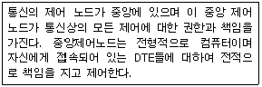
- 버스형
- 링형
- 성형
- 계층형
(정답률: 72%)
100. 뉴미디어의 특징과 가장 거리가 먼 것은?
- 단방향성
- 네트워크화
- 분산적
- 특정 다수자
(정답률: 71%)